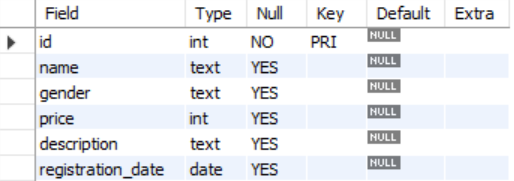

데이터 조회 기초
Table of contents
SQL 기초
DB, 테이블 구조 파악하기
- 존재하는 데이터베이스 파악
SHOW DATABASES;- information_schema / mysql / performance_schema / sys는 MySQL이라는 DBMS의 구동을 위해 존재하는 기본 데이터베이스들
- 존재하는 테이블 파악
SHOW FULL TABLES IN 데이터베이스명;- 각 테이블의 이름과 함께 Table_type을 파악할 수 있다 (BASE TABLE / VIEW)
- cf) 그냥
SHOW TABLES라고만 하면 type 정보 없이 각 테이블의 이름만 출력됨
- 테이블의 구조 파악
DESCRIBE 테이블명;- 테이블의 컬럼 구조, 각 컬럼의 데이터 타입, 속성을 확인 가능
-
DESC 테이블명;이라고 줄여서 입력해도 동일
ex) 
- Field : 컬럼의 이름
- Type : 컬럼의 데이터 타입
- Null : 컬럼의 Null 속성 유무
- Key : Primary Key, Unique 속성 여부
- Default : 컬럼의 기본값
- Extra : AUTO_INCREMENT 등의 기타 속성
- Foreign Key 관계 파악
- Foreign Key 관계를 파악해두면, 데이터베이스가 어떻게 설계되었는지, 각 데이터가 어떤 관계를 갖는지 파악하는 데에 도움이 된다
- 아래는 MySQL에서 사용되는 코드. Foreign Key 정보를 조회하는 SQL문은 DBMS마다 차이가 있으므로 유의!
SELECT i.TABLE_SCHEMA, i.TABLE_NAME, i.CONSTRAINT_TYPE, i.CONSTRAINT_NAME, k.REFERENCED_TABLE_NAME, k.REFERENCED_COLUMN_NAME FROM information_schema.TABLE_CONSTRAINTS i LEFT JOIN information_schema.KEY_COLUMN_USAGE k ON i.CONSTRAINT_NAME = k.CONSTRAINT_NAME WHERE i.CONSTRAINT_TYPE = 'FOREIGN KEY';
SQL문 작성 형식
- SQL 문 끝에는 항상 세미콜론(;)을 써줘야한다
- SQL 문 안에는 공백/줄바꿈 등을 자유롭게 넣을 수 있다 (실행에는 영향 없음. 가독성을 위한 것)
- SELECT, FROM 등 기본 예약어들은 대문자로 쓰는 게 좋다 (대소문자 여부는 실행에는 영향 없음.)
- 사용할 데이터베이스를 명시해주는 방법:
- 데이터 조회시
SELECT * FROM dbname.tablename이렇게 데이터베이스명도 함께 적어준다 - 왼쪽 SCHEMAS 패널 부분에서 사용할 데이터베이스를 클릭해 활성화해둔다
- SQL문 맨 처음에
USE dbname;이라고 명시해두고 시작한다
- 데이터 조회시
SELECT, FROM
: 보통 SELECT 대상 FROM 테이블명의 구조가 SQL 데이터 조회의 기초
- SELECT: 테이블의 어떤 칼럼을 조회할지
- *: 해당 테이블의 모든 칼럼을 다 조회하겠다는 의미
SELECT * FROM tablename; - 특정 칼럼명을 넣어주면 해당 칼럼들만 조회
SELECT column1, column2 FROM tablename;
- *: 해당 테이블의 모든 칼럼을 다 조회하겠다는 의미
- FROM: 어떤 테이블의 데이터를 조회할지
- 데이터베이스명.테이블명의 구조로 적어줘도 되고, (같은 테이블명이 여러 DB에 존재한다면 이런 형태로 적어주는 게 좋다)
SELECT * FROM dbname.tablename; - 어떤 데이터베이스를 사용하는지 명확한 경우라면 테이블명만 적어줘도 된다
SELECT * FROM tablename
- 데이터베이스명.테이블명의 구조로 적어줘도 되고, (같은 테이블명이 여러 DB에 존재한다면 이런 형태로 적어주는 게 좋다)
WHERE: 조건 걸기
- WHERE로 특정 조건의 데이터만 조회할 수 있다
조건 표현 방식
- 기초
- =: 같음
-- ‘age’ 칼럼의 값이 27인 행(row)만 조회 SELECT * FROM tablename WHERE age = 27; - !=, ><: 같지 않음
-- 성별이 ‘m’이 아닌 = 여성인 회원 데이터만 조회 SELECT * FROM tablename WHERE gender != ‘m’; - IN: ( ) 안의 여러 값들 중 해당하는 값이 있는 row들만 선택
-- 나이가 20이나 30인 회원 데이터만 조회 ex) SELECT * FROM tablename WHERE age IN (20, 30); - NOT IN: ( ) 안의 여러 값들 중 어느 것과도 일치하지 않는 row만 선택
-- 나이가 20이나 30이 아닌 회원 데이터만 조회 ex) SELECT * FROM tablename WHERE age NOT IN (20, 30);
- =: 같음
- 숫자형 칼럼 (INT, DOUBLE 등)
- 부등호 이용 (>, <, >=, <=)
-- 나이가 27 이상인 회원 데이터만 조회 SELECT * FROM tablename WHERE age >= 27; - BETWEEN a AND b: a와 b 사이의 값을 갖는 데이터만 조회 (양 끝(a, b)도 포함)
-- 30대 회원 데이터만 조회 SELECT * FROM tablename WHERE age BETWEEN 30 AND 39; - NOT을 붙이면 해당 조건을 제외하고 조회됨
-- 30대가 아닌 회원 데이터만 조회 SELECT * FROM tablename WHERE age NOT BETWEEN 30 AND 39;
- 부등호 이용 (>, <, >=, <=)
- 날짜형 칼럼 (DATE, DATETIME 등)
- 숫자형처럼, 부등호나 BETWEEN 사용 가능
SELECT * FROM tablename WHERE sign_up_day > '2019-01-01';SELECT * FROM tablename WHERE sign_up_day BETWEEN '2018-01-01' AND '2018-12-31';
- 숫자형처럼, 부등호나 BETWEEN 사용 가능
- 문자형 칼럼 (TEXT 등)
- LIKE ‘패턴’ 매칭
-- address가 ‘서울’로 시작하는 모든 행과 매칭 SELECT * FROM tablename WHERE address LIKE '서울%';-- address에 ‘고양시’가 포함되어 있는 모든 행과 매칭 SELECT * FROM tablename WHERE address LIKE '%고양시%'; - +) NOT LIKE 매칭도 가능
-- address가 ‘서울’로 시작하지 않는 모든 행과 매칭 SELECT * FROM tablename WHERE address NOT LIKE '서울%'; - %: 임의의 길이를 가진 문자열을 나타냄 (0자도 포함)
- _: 문자 하나를 의미
-- 이메일 주소가 c로 시작하고, 그 뒤에 임의의 문자 5개가 온 후, @가 붙고 그 뒤에 무언가 임의의 길이를 가진 문자열이 붙는다는 의미 SELECT * FROM tablename WHERE email LIKE ‘c_____@%’; -- candy@google.com 등의 이메일 주소가 해당 패턴과 매칭됨
+) 문자형조회 Escaping: \(backslash)를 사용
- ex)
\%– 실제 %(퍼센트 기호)를 포함한 문자를 찾을 수 있음 - ‘(작은 따옴표), _(언더바) ,”(큰 따옴표)도 \를 활용해 escape
+) 대소문자 구분해서 조회하기
- Table collation 설정이 ci(Case Insensitive) 설정으로 되어 있으면, 문자형 데이터를 조회할 때 g나 G가 똑같이 간주됨.
- 이럴 때 g와 G를 구분해서 조회하고 싶으면, BINARY라고 써주면 된다
-- 소문자 g가 포함된 문자열만 조회 SELECT * FROM tablename WHERE sentence LIKE BINARY ‘%g%’;-- 대문자 G가 포함된 문자열만 조회 ex) SELECT * FROM tablename WHERE sentence LIKE BINARY ‘%G%’;
- LIKE ‘패턴’ 매칭
- ANY, ALL
- ANY: 여러 조건 중 하나라도 만족되면 TRUE가 반환됨 (‘SOME’을 사용해도 동일)
SELECT * FROM tablename WHERE view_count > ANY(150000, 250000, 300000); -- 150000, 250000, 300000 중 하나보다 큰 view_count를 가지고 있으면 출력됨 -- (사실 이 경우는 그냥 MIN을 사용하는 것과 동일) - ALL: 여러 조건 모두가 만족되면 TRUE가 반환됨
SELECT * FROM tablename WHERE view_count > ALL(150000, 250000, 300000); -- 150000, 250000, 300000 중 모두보다 큰 view_count를 가지고 있으면 출력됨 -- (사실 이 경우는 그냥 MAX를 사용하는 것과 동일)
- ANY: 여러 조건 중 하나라도 만족되면 TRUE가 반환됨 (‘SOME’을 사용해도 동일)
AND, OR 연산
: 여러 개의 조건 걸기
- AND
- ex) 남성이면서 주소가 서울로 시작하는 회원 데이터 조회
SELECT * FROM tablename WHERE gender = ‘m’ AND address LIKE ‘서울%; - ex) 조건 3개를 연결: 남성이면서 주소가 서울이고 나이가 25~29인 회원 데이터 조회
SELECT * FROM tablename WHERE gender = ‘m’ AND address LIKE ‘서울% AND age BETWEEN 25 and 29;
- ex) 남성이면서 주소가 서울로 시작하는 회원 데이터 조회
- OR
- ex) 봄(3~5월) 혹은 가을(9~11월)에 가입한 회원 데이터 조회
SELECT * FROM tablename WHERE MONTH(sign_up_day) BETWEEN 3 AND 5 OR MONTH(sign_up_day) BEWEEN 9 AND 11; - 주의사항:
WHERE id = 1 OR id = 2와 같이 같은 칼럼에서의 조건을 함께 적는 경우,WHERE id = 1 OR 2이렇게 적으면 안된다! (두 조건의 칼럼이 같더라도 다 적어줘야 함) - +) 사실, WHERE id = 1 OR id = 2 같은 경우는 WHERE id IN (1, 2) 라고 표현하면 더 짧게 가능
- ex) 봄(3~5월) 혹은 가을(9~11월)에 가입한 회원 데이터 조회
- AND와 OR 복합
- ex) 180 이상인 남자 회원, 또는 170 이상인 여자 회원 데이터 조회
SELECT * FROM tablename WHERE (gender = 'm' AND height >= 180) OR (gender = 'f' AND height >= 170); - AND와 OR를 섞어서 사용할 경우, 어떤 부분을 먼저 고려해야 하는지 ()로 표시해주는 게 좋다!
- ()로 우선순위를 표시하지 않으면, AND가 OR보다 우선순위가 높게 간주된다. (AND 부분이 먼저 실행됨)
- 하지만 그냥 AND이든 OR이든 먼저 실행되어야 하는 부분에 ()를 씌워 표시해주는 습관을 들이면 더 직관적으로 이해하기 쉬운 코드가 된다
- ex) 180 이상인 남자 회원, 또는 170 이상인 여자 회원 데이터 조회
DATE 데이터 타입 다루기
- YEAR, MONTH, DAYOFMONTH, DAYOFWEEK
- YEAR 함수: 날짜에서 연도만 추출
-- 1992년에 태어난 회원 데이터만 조회 SELECT * FROM tablename WHERE YEAR(birthday) = ‘1992’; - MONTH 함수: 날짜에서 월만 추출
-- 여름(6, 7, 8월)에 가입한 회원 데이터만 조회 SELECT * FROM tablename WHERE MONTH(sign_up_day) IN (6, 7, 8); - DAYOFMONTH 함수: 날짜에서 일만 추출
-- 각 달의 후반부(15일~31일)에 가입한 회원 데이터만 조회 SELECT * FROM tablename WHERE DAYOFMONTH(sign_up_day) BETWEEN 15 AND 31; - DAYOFWEEK 함수: 날짜에서 요일을 추출
-- 토요일에 가입한 회원 데이터만 조회 (1: 일요일, 2: 월요일, ..., 7: 토요일) SELECT * FROM tablename WHERE DAYOFWEEK(sign_up_day) = 7;
- YEAR 함수: 날짜에서 연도만 추출
- 날짜 간 차이 구하기: DATEDIFF
- DATEDIFF(날짜 a, 날짜 b) → ‘날짜 a - 날짜 b’를 해서 그 차이 일수를 알려준다
- ex) DATEDIFF(’2018-01-05’, ’2018-01-03’)의 값은 2
-- 가입한 날로부터 2019.01.01까지의 기간을 함께 조회 SELECT email, sign_up_day, DATEDIFF(sign_up_day, ‘2019-01-01’) FROM tablename; - +) CURDATE(): 오늘 날짜를 구하는 함수
-- 가입한 날로부터 오늘 날짜까지의 기간을 함께 조회 SELECT email, sign_up_day, DATEDIFF(sign_up_day, CURDATE()) FROM tablename; - +)
DATEDIFF(날짜 a, 날짜 b) / 365이렇게 계산하면 기간을 ‘연(year)’ 단위로 확인할 수 있음 - +)
DATEDIFF(날짜 a, 날짜 b)는날짜 a - 날짜 b와 동일 (어느 날짜가 더 큰지 아는 경우, 단순 빼기로도 계산 가능)
- DATE_FORMAT(datetime, ‘custom_format’)
- datetime 포맷의 날짜를 원하는 형태로 출력해줌
-- 로그인 날짜를 '2022-03-04'와 같은 포맷으로 출력 SELECT DATE_FORMAT(login_date, '%Y-%m-%d') FROM tablename;
- datetime 포맷의 날짜를 원하는 형태로 출력해줌
- STR_TO_DATE(date_string, ‘assigned_format’)
- 문자열 포맷으로 담긴 날짜를 datetime 포맷으로 변환해준다. 문자열 날짜가 어떤 형태로 담겨있는지 그 형식을 잘 적어줘야 함.
-- '20220304'와 같은 형식의 문자열로 담겨 있던 로그인 날짜를 datetime으로 바꿔서 출력 SELECT STR_TO_DATE(login_date_str, '%Y%m%d') FROM tablename;
- 문자열 포맷으로 담긴 날짜를 datetime 포맷으로 변환해준다. 문자열 날짜가 어떤 형태로 담겨있는지 그 형식을 잘 적어줘야 함.
ORDER BY: 데이터 정렬
- 오름차순 정렬: ASC
-- 키가 작은 회원부터 순서대로 출력 SELECT * FROM tablename ORDER BY height ASC;- +) 아래와 같이 ASC를 안써줘도 ASC가 default이기 때문에 똑같이 오름차순 정렬로 실행된다 (그렇지만 나중에 보고 빨리 이해하기 위해선 ASC를 써주는 게 더 좋음)
SELECT * FROM tablename ORDER BY height;
- +) 아래와 같이 ASC를 안써줘도 ASC가 default이기 때문에 똑같이 오름차순 정렬로 실행된다 (그렇지만 나중에 보고 빨리 이해하기 위해선 ASC를 써주는 게 더 좋음)
- 내림차순 정렬: DESC
-- 키가 큰 회원부터 순서대로 출력 SELECT * FROM tablename ORDER BY height DESC; - +) null값은 가장 작은 값으로 취급됨
+) TEXT 타입 칼럼의 경우, ASC으로 정렬하면 알파벳 순서대로 정렬됨
- +) 여러 기준을 두고 정렬: ‘ORDER BY 기준1, 기준2’ 이렇게 쓰면 기준1부터 우선 정렬됨
-- 가입 연도를 기준으로 우선 내림차순 정렬한 후, 가입 연도가 같은 회원들은 이메일 기준으로 오름차순 정렬됨 ex) SELECT sign_up_day, email FROM tablename ORDER BY YEAR(sign_up_day) DESC, email ASC;
CAST(data AS 타입)
: 데이터 타입 일시적으로 바꿔주기
- TEXT 타입 칼럼에 있는 숫자값을 정렬하면, 120 < 19 < 230 < 27의 순서로 오름차순 정렬됨. (TEXT 타입은 INT 타입과 달리, 첫번째 자리부터 한 문자 한문자씩 비교해서 정렬하는 것이기 때문)
- TEXT 타입인 칼럼에 있는 숫자값을 숫자형처럼 정렬해주고 싶으면, CAST 함수로 데이터 타입을 일시적으로 변경해주면 된다!
SELECT * FROM tablename ORDER BY CAST(data AS signed) ASC; -- 이렇게 써주면 19 < 27 < 120 < 230 이렇게 잘 정렬됨- signed: 양수와 음수를 포함한 모든 정수를 나타낼 수 있는 데이터 타입.
- +) decimal: 소수점이 있는 수를 나타내는 타입
LIMIT: 데이터 일부만 출력
- ‘LIMIT n’: 맨 처음부터 n개의 데이터만 출력
-- 가장 최근에 가입한 회원 10명의 데이터만 출력 SELECT * FROM tablename ORDER BY sign_up_day DESC LIMIT 10; - ‘LIMIT m, n’: m+1번째 데이터부터 n개의 데이터만 출력
(0, 1, 2, … , m 이런 식으로 행을 세는 것이라, m은 m+1번째를 의미)-- 가입일자가 가장 최근인 회원부터 정렬된 상태에서, 9번째 & 10번째 row의 데이터만 출력 -- (index가 8, 9인 row) SELECT * FROM tablename ORDER BY sign_up_day DESC LIMIT 8, 2;